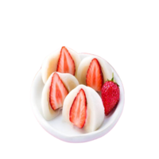

Daifuku

R$ 35,00
Ingredientes
100g de farinha de
arroz glutinoso
160ml de água
50g de açúcar
Morangos
Opções de recheios
Doce de leite
Nutella
Chocolate Amargo
Pasta de Matcha
Pure de batata-doce roxa
Frutas vermelhas